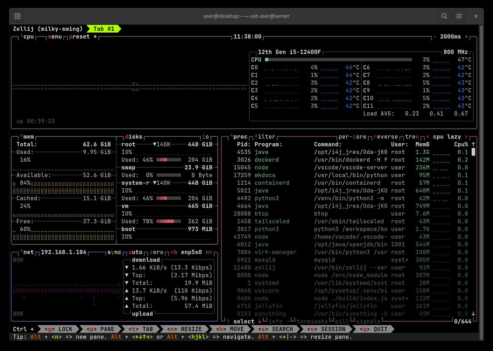

My Self-Hosting Journey

Self-hosting your own services has been catching up in popularity: the selfhosted subreddit has over 180K members as of 21/5/22, and the number of self-hosted solutions has been growing exponentially (see a huge list here).
Self-hosting frees you from vendor lock-in. By using open-source alternatives, you gain portability for your data, and you are free to change to another solution anytime. In addition, there is the benefit of learning about server management and the command-line, which in my opinion are portable skills which can be used in any environment, unlike GUIs which are specific for an application.
In addition, I have been getting increasingly frustrated with Windows due to various issues, and switching to Linux offers one a much needed breath of freedom, customizability and fresh air. Finally, I wanted something which I could keep running 24/7 and not have to pay recurring subscriptions.
It was with those considerations in mind that I decided to go ahead with self hosting.
Specifications

- CPU: Intel i5-12400F (6 cores, 12 threads, 18M Cache, up to 4.40Ghz)
- Memory: Crucial 32GB DDR4 3200Mhz
- Motherboard: Gigabyte B660M DS3H DDR4
- Boot Drive: Samsung 500GB 980 NVME M.2
- OS: Fedora Linux (Server Edition)
Total cost of the above was SGD $830.
In addition, I have ~ 30TB of storage in a RAID1 configuration assembled from various drives.
Hosted Services

I use Dashy to display all the hosted web services on my site. Authentication is via nginx's auth_request to a Django backend.
All hosted services are in Docker containers with limited permissions to reduce the possible attack surface, with logs all redirected to the systemd journal, with the journald driver.
Uptime Monitoring
Uptime monitoring is hosted on an offsite VPS with Uptime Kuma, on a separate site, with notifications via Telegram. This is to allow for redundancy in case my server goes down.
Storage and Backup
As of 2022 Dec, I have 32TB of raw storage, consisting of 2x WDC WD120EMFZ-11A6JA0 12TB drives plus a 8TB ATA WDC WD80EAZZ-00B8TB (all non-SMR drives1) in a (software) BtrFS RAID-1 configuration, corresponding to approximately 16TB of usable storage.
I use SSHFS to access my storage remotely. This storage is accessible locally in my LAN via NFS, which Windows also supports5.
I chose BtrFS over dmraid + ext4 as BtrFS:
- allows for online subvolume resizing/deletion/modification
- supports file checksums in RAID modes2
- allows for arbitrary drives to be added/removed from the RAID configuration, and balance the resulting filesystem automatically
- supports lightweight snapshots and sending these snapshots to other devices for backup
BtrFS also allows for RAID-1 with any number of devices, of all different sizes. The resulting available storage is usually half the total storage available. This is made possible as the filesystem allocates data in chunks, with each chunk on a RAID-1 setup being duplicated to 2 different drives.
Snapshots
btrbk is a great utility which I utilize for backups. It allows for automatic snapshot creation, backups to multiple destinations (including SSH), incrementals backups as well as utilities to calculate accurate snapshot space usage.
I use btrbk together with systemd.timer to make hourly rolling snapshots, preserving snapshots:
- every hour for the last 24 hours
- every day for the past 7 days
- every week for the past 4 weeks
- every month for the past 12 months
- every year for the past 3 years
This allows me to fallback to any state in the past.
I manually run the archive command3 to send snapshots over to an external drive every 6 months.
The backup drive is encrypted with AES-256 (via cryptsetup4).
Backup commands previously used
Prior to btrbk, here were the backup commands I used.
# Create a subvolume snapshot of /mnt/storage
# Note: 'snapshots' and 'subvolumes' are synonymous in BtrFS: A snapshot is a copy of a subvolume
btrfs subvolume snapshot -r /mnt/storage/ /mnt/storage/snapshot.$(date +%Y-%m-%d)
# Send that snapshot to the backup device /mnt/sdc1
btrfs send /mnt/storage/snapshot.2022-05-18/ | btrfs receive /mnt/sdc1
# To instead send an incremental snapshot:
# Note: the parent snapshot must exist on the receiving drive
btrfs send -p <path to parent snapshot on sending drive> <subvol> | btrfs receive /mnt/sdc1
The UUID of the parent subvolume (in the sending drive) must be in one of the receiving drive subvolume's 'Received UUID', in order for the incremental send operation to work. See below for an example:
Target volume with 2 snapshots, server-2022-05-18 followed by snapshot.test:
[root@server sdc1]# btrfs su show /mnt/system-root/server-2022-05-18/server-2022-05-18
Name: server-2022-05-18
UUID: 2b33e415-046b-a746-a35f-50cdef411a9f
Parent UUID: c8a82094-4270-274b-bd08-77aea3dc0896
Received UUID: -
[root@server sdc1]# btrfs su show /mnt/system-root/snapshot.test/snapshot.test
Name: snapshot.test
UUID: 8a42b8d1-d145-9249-9e76-e7748dc4aeb5
Parent UUID: c8a82094-4270-274b-bd08-77aea3dc0896
Received UUID: -
Note on the backup drive that the Received UUID of the original snapshot is the same as the target volume's original snapshot server-2022-05-18.
[root@server sdc1]# btrfs su show /mnt/sdc1/server-2022-05-18/server-2022-05-18
Name: server-2022-05-18
UUID: 5ed89436-7a3b-5744-9460-cf79ced43e2c
Parent UUID: -
Received UUID: 2b33e415-046b-a746-a35f-50cdef411a9f
[root@server sdc1]# btrfs su show /mnt/sdc1/snapshot.test/snapshot.test
Name: snapshot.test
UUID: 7fcd7d87-b2a2-eb46-a636-ca62dfd4029f
Parent UUID: 5ed89436-7a3b-5744-9460-cf79ced43e2c
Received UUID: 8a42b8d1-d145-9249-9e76-e7748dc4aeb5
Note: The Received UUID does not change when a snapshot is snapshot-ed again.
Maintenance
I run btrfs scrub monthly.
SSH Access
SSH access to my server is available via public keys, password access with 2FA (provided via Google Authenticator PAM6) and Web terminal access via Apache Guacamole.
I previously used SSH with certificates, however it does not allow me to revoke access as easily as public keys.
Mobile
Mobile SSH access is via Termux, a terminal emulator for Android which features Mosh7 pre-installed.
Terminal UI
I use tmux, a terminal multiplexer, which allows me to keep terminal sessions running on the server on connection close (even if by accident), and resume them from another computer. I use a .bashrc config to load tmux on interactive logins.
.bashrc Configuration
# Since tmux also runs .bashrc, we need to check we are not in tmux
# Other checks are to make sure these commands only run in interactive shells
if [[ $- == *i* ]] && [[ -n $SSH_CONNECTION ]] && [[ -z "$TMUX" ]]; then
tmux new-session -A
fi
Finally, I use Powerline, a great status plugin showing CPU/memory/uptime stats, on bash and tmux.
-
SMR drives have a much greater write penalty compared to CMR/PMR drives. ↩
-
If some bits in one of the drives were to fail (e.g. due to bit rot),
dmraidwould not know which drive contains the correct data as it operates below the filesystem layer. ↩ -
There is an issue with
btrbknot sending snapshots without direct parent-child uuid link when usingresume. To get around this, I usearchiveinitially to copy snapshots over to the external drive. ↩ -
The reason I do not use
cryptsetup(ordmcrypt) directly on the disk is that Windows/other software might accidentally wipe the partition table (and the LUKS header), rendering the disk unlockable. ↩ -
Windows sets the UID/GID to -2 for some reason, preventing you from writing to files by default. This is the fix. ↩
-
On Fedora, Google Authenticator PAM has some issues with SELinux security configurations and so I use a workaround. ↩
-
Mosh allows for SSH access over unreliable/mobile connections, including scenarios like changing IP addresses (which can happen as the mobile device moves out of Wifi range). ↩